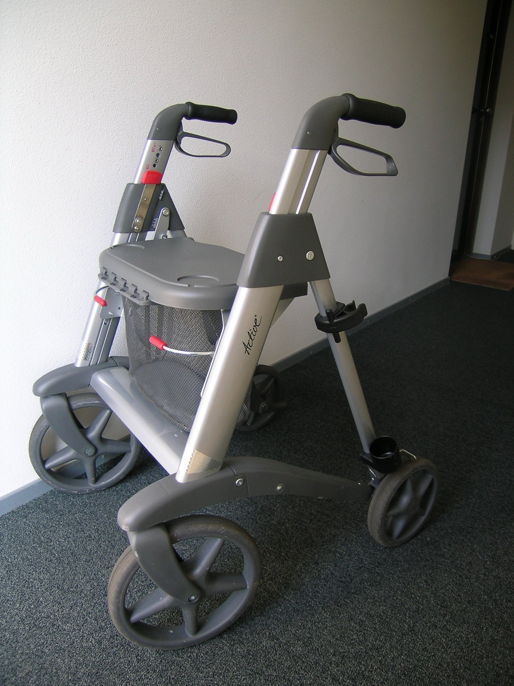
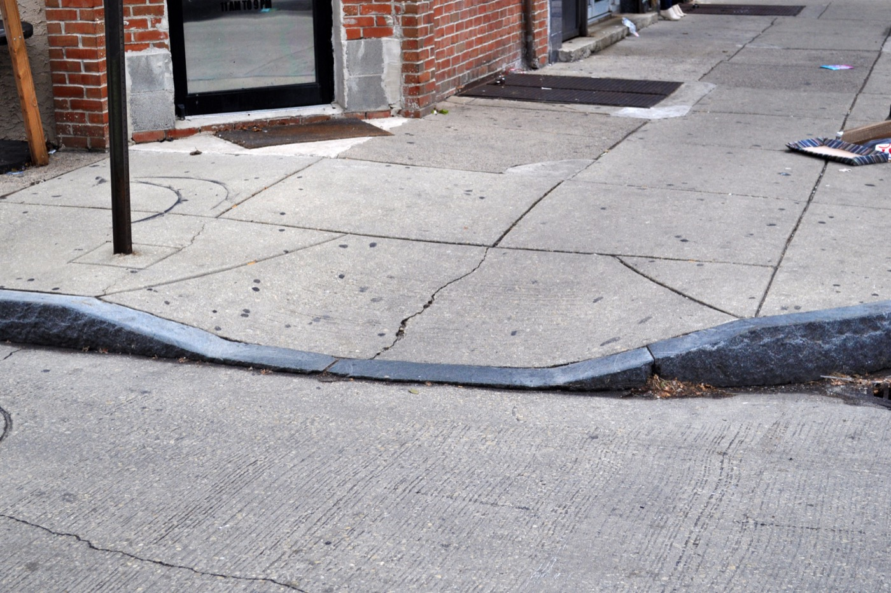
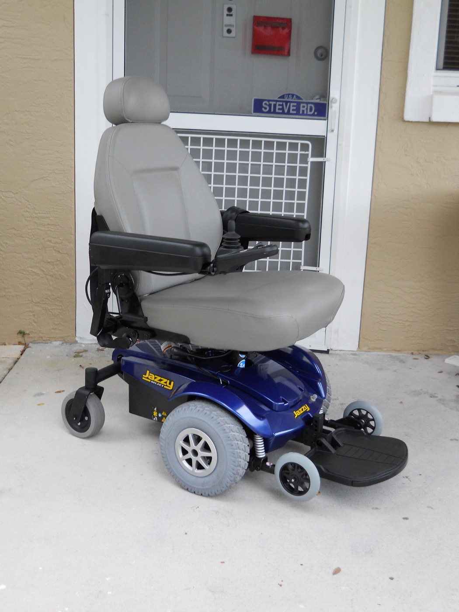

Executive Summary
이 글은 로봇 없이 로봇 주행 데이터를 모은 연구를 본다. 노스이스턴대 체험로보틱스연구소의 사르베시 프라자파티와 아난야 트리베디, 로레나 마리아 제누아, 드레이크 무어, 타슈큰 파드르, 그리고 같은 대학 코리 컴퓨터과학대의 브루스 맥스웰이 9월 17일 arXiv에 올린 논문이다. 이름은 UNI, 바퀴 달린 로봇의 주행을 가르칠 데이터를 그 로봇 없이 모으는 방식을 가리킨다.
장비는 어디서나 살 수 있는 네 바퀴 보행보조기에 스마트폰을 물린 것이 전부다. 이 장비는 계단을 오르지 못하고, 낮춰 놓지 않은 연석을 넘지 못하며, 제 폭보다 좁은 틈을 지나지 못한다. 그래서 수집자가 고르는 경로는 자연히 바퀴로 다닐 수 있는 길로 좁아진다. 여섯 명이 미국 세 도시에서 87회에 걸쳐 37.2km를 모았고, 이 데이터로 다시 배운 주행 모델 세 종의 궤적 예측 오차가 17.4~24.8% 줄었다. 다만 같은 조정이 모든 데이터셋에서 이득이 되지는 않았다. 기존 코퍼스 하나에서는 오히려 성능이 내려갔고, 저자들은 그 사실을 표에 그대로 실었다.
4절까지는 논문이 보고한 설계와 수치, 저자가 스스로 그어 둔 한계선을 따라간다. 5절에서 이 결과를 데이터셋 문서에 무엇을 적어 둘 것인가의 문제로 옮겨 읽는 대목은 이 글의 해석이다.
주요 수치
출처: Prajapati, S. 외 (2026), arXiv:2609.20114v1
37.2km
로봇 없이 모은 주행 거리
여섯 명이 보스턴·뉴욕·우스터에서 87회에 걸쳐 모았다. 녹화 시간으로는 10.8시간이다
250달러
수집 장비 값
스마트폰은 뺀 값이다. 조립에 30분이 들고 3D 프린팅 부품이나 전용 제작 하드웨어는 쓰지 않는다
0건
계단·미절단 연석 통과
관성센서와 깊이로 의심 구간을 추린 뒤 영상으로 다시 봤다. 확인된 통과는 없었다
17.4~24.8%
궤적 예측 오차 감소
GNM·ViNT·NoMaD 세 모델을 이 데이터로 미세조정한 뒤 남겨 둔 UNI 구간에서 측정했다
로봇 데이터는 로봇이 있어야 모인다
보도 위를 달리는 바퀴 로봇이 늘고 있다. 마지막 구간 배달, 시설 점검, 전동 이동기기가 대표적이다. 이런 환경에서 학습으로 주행을 익히려면 그 현장에서 찍은 다양한 시연 데이터가 필요한데, 그 데이터를 모으는 일 자체가 비싸다. 로봇 플랫폼을 실어 나르고 정비하고 감독해야 하기 때문이다. 논문은 학계 연구팀이 감당할 수 있는 장소와 조건의 수가 이 요구 때문에 제한된다고 적고, 상업 플릿이 모은 데이터는 비공개로 남을 수 있다는 점을 함께 든다.

그래서 로봇을 빼고 모으려는 시도가 이어졌다. 사람이 몸에 장비를 두르고 걷는 방식이 하나다. MuSoHu와 EgoWalk가 그렇게 모았다. 웹에 올라온 보행·주행 영상에서 카메라 움직임을 되짚어 사람이 라벨을 붙이지 않고도 학습 신호를 만드는 CityWalker 같은 접근도 있다. 둘 다 로봇을 운영하는 부담을 크게 덜어 준다. 대신 CityWalker는 궤적의 배율 문제를 실제 거리를 되찾는 쪽이 아니라 정규화하는 쪽으로 넘겼다. 미터 단위가 필요한 자리에서는 그 차이가 남는다.
문제는 사람이 걸어 다닌 경로에 있다. 사람의 보행 경로에는 계단과 낮춰 놓지 않은 연석, 좁은 틈이 섞여 들어간다. 바퀴 로봇은 그런 곳을 지나지 못한다. 이 대목에서 논문이 쓴 한 문장이 연구 전체의 출발점이다. 그런 경로를 나중에 걸러 내도, 애초에 시연된 적 없는 바퀴로 갈 수 있는 대안 경로는 되살릴 수 없다. 걸러 내기는 잘못된 것을 없앨 수 있을 뿐, 없는 것을 만들어 내지는 못한다.
비슷한 문제를 조작 분야가 먼저 풀었다. UMI는 사람이 손에 쥐는 프록시 그리퍼로 로봇 없이 시연을 모으면서, 작업에 중요한 물리적 제약은 그대로 남겼다. 이 방식은 공중 조작이나 접촉이 많은 촉각 작업으로도 번졌다. 저자들이 던진 물음은 이 계보를 내비게이션으로 옮긴 것이다. 단순한 물리적 프록시 하나로, 로봇 없이 모으면서 사람의 시연을 바퀴로 갈 수 있는 경로 쪽으로 기울일 수 있는가.
250달러짜리 보행보조기와 라이다 달린 아이폰
답으로 내놓은 장비는 소박하다. 시중에서 파는 네 바퀴 보행보조기에 흔한 거치대로 스마트폰을 물렸다. 조립에 30분쯤 걸리고, 3D 프린팅 부품도 전용 제작 하드웨어도 필요 없다. 스마트폰을 빼면 250달러 안팎이다. 수집자는 네 바퀴를 모두 땅에 붙인 채 장비를 밀고 걷는다. 그러면 계단과 미절단 연석 대신 경사로와 연석 절단부를 고르게 되고, 장비 폭보다 좁은 통로는 애초에 들어가지 못한다.

중요한 것은 이 제약이 지침이 아니라 사물이라는 점이다. 수집 지침은 지켜지지 않을 수 있고, 지켜졌는지 확인하기도 어렵다. 앞선 연구가 이미 그 사실을 남겨 두었다. 사람이 장비를 두르고 걷는 방식으로 모은 EgoWalk는 수집 지침을 분명히 두었는데도 로봇이 할 수 없는 동작이 시연에 섞일 수 있다고 인정했고, MuSoHu는 걸음걸이가 만드는 흔들림과 시점 차이를 한계로 짚었다. 반면 계단 앞에 선 네 바퀴는 논쟁의 여지가 없다. 아래 도식은 같은 거리를 사람이 걸을 때와 보행보조기를 밀고 걸을 때 경로가 어디서 갈라지는지를 나타낸 것이다.
2.1스마트폰이 기록하고, 스마트폰의 기록을 믿지 않는다
기록은 저자들이 만든 iOS 앱 센서볼트가 맡는다. 라이다가 달린 아이폰에서 1280×720 RGB 영상과 256×192 깊이·신뢰도 맵, 6자유도 시각관성 주행계 자세를 모두 초당 30장으로 받고, 여기에 100Hz 관성 측정값과 GPS, 오디오를 더해 한 파일에 담는다. 카메라 내부 변수와 초점 고정까지 기록에 함께 넣어 두는 것은 나중에 궤적을 되살릴 때 쓰기 위해서다. 모든 수집에는 아이폰 16 프로 한 기종만 썼다.
정작 이 앱이 기록한 자세값은 학습에 쓰지 않는다. 스마트폰의 시각관성 주행계는 길게 찍으면 흔들리거나 아예 놓치기 때문이다. 10.8시간 분량의 자세 기록을 검사했더니 34.9%가 사람이 걸어서는 나올 수 없는 움직임을 보였다. 세 토막에 한 토막꼴이다. 저자들은 이 값을 참고용으로만 남기고 공개 궤적의 원천으로는 쓰지 않기로 했다.
대신 영상만으로 궤적을 다시 만든다. Depth Anything 3으로 48프레임 창을 4Hz로 훑어 창마다 깊이와 카메라 자세를 함께 예측하고, 12프레임씩 겹치는 구간을 맞춰 하나로 잇는다. 여기까지는 단위가 없는 좌표라 실제 거리를 알 수 없다. 거리를 붙이는 일은 아이폰 라이다가 한다. 이어 붙인 구간마다 라이다 깊이와 예측 깊이의 비를 프레임별로 구하고 그 중앙값 하나를 절대 배율로 삼는다. 겹치는 구간에서 두 창의 자세 추정이 크게 어긋나는 이음매는 버린다.
받쳐 줄 라이다 깊이가 모자라는 구간에는 억지로 배율을 매기지 않고 버린다. 후보 구간의 8.3%가 이렇게 빠졌고, 대부분 카메라가 가려졌거나 장비를 들어 옮기던 구간처럼 애초에 주행이 아닌 기록이었다. 배율을 붙일 수 없다는 조건이 품질 관문 노릇을 함께 한 셈이다.
이렇게 만든 궤적을 믿어도 되는지는 정답이 있는 데이터로 확인했다. 실내 모션캡처 정답이 있는 TUM RGB-D에서 배율 오차가 7.67%에서 3.14%로 내려갔고 절대 궤적 오차는 0.0256m였다. 같은 자료에서 ORB-SLAM3가 0.0197m로 조금 더 낮았지만 65개 창 중 64개만 복원한 반면, 이 방식은 65개를 모두 복원했다. 차량 속도로 움직이는 KITTI에서는 배율 오차가 22.92%에서 6.75%로, 절대 궤적 오차가 2.483m에서 0.720m로 줄었다. 실제 UNI 녹화 30건에 ORB-SLAM3를 돌려 맞대 보기도 했다. 자세를 추정해 낸 프레임이 전체의 84.1%였고 전 구간을 끝까지 따라간 녹화는 10건뿐이었지만, 추적이 깨끗하게 된 구간에서는 두 궤적이 이동 거리의 1.8~2.8% 차이로 일치했다.
같은 앵커링을 다른 복원 모델에도 붙여 봤다. VGGT는 비슷한 정확도를 냈지만 DROID는 배율 오차가 크게 남았다. 라이다로 거리를 붙이는 절차만으로는 모자라고 영상에서 형태를 되살리는 단계의 품질이 여전히 결과를 가른다는 뜻이다.
의도한 편향이 지켜졌는지 스스로 확인한다
수집 규칙은 단순하다. 연석 절단부와 경사로, 승강기, 충분히 넓은 통로만 쓴다. 10.8시간 내내 수집자들은 장비를 들어 계단이나 연석을 넘기지 않고 이 규칙을 지켰다. 가려던 길이 장비로 갈 수 없으면 갈 수 있는 다른 길로 이어 갔다. 논문이 든 예가 이 원칙의 성격을 잘 보여 준다. 내리려던 역에 접근 가능한 출구가 없자 수집자는 열차에 그대로 남아 접근 가능한 다음 역에서 내렸다.

여기서 이 연구가 한 걸음 더 나간다. 규칙을 세웠다고 끝내지 않고 지켜졌는지 측정했다. 관성센서의 걸음 특유 신호로 계단을 오른 것으로 의심되는 구간을 뽑고, 깊이로 지면을 추정해 단차 높이를 재서 연석을 넘은 것으로 의심되는 구간을 뽑았다. 그렇게 걸러진 후보를 영상으로 다시 봤다. 계단이나 미절단 연석을 실제로 통과한 사례는 확인되지 않았다.
같은 구간을 세어 보면 이 데이터셋이 어떤 장면을 담았는지도 드러난다. 횡단 169건, 승강기 이용 49회, 점자블록 위 주행 1.28km다. 승강기는 19개 세션, 점자블록은 67개 세션에 걸쳐 있다. 표면도 고르지 않다. 콘크리트 보도와 벽돌, 아스팔트, 자갈, 조약돌, 판자길, 흙, 잔디, 모래, 카펫, 타일, 테라조가 섞여 있고 젖은 노면도 들어 있다.
저자들은 자기가 내세운 편향에 경계선도 함께 그었다. 이 관찰은 수집 규칙이 의도한 편향을 뒷받침하지만, 특정 로봇으로 옮겨 갈 때는 그 로봇의 바닥 면적과 지상고, 견딜 수 있는 경사에 따라 결과가 달라진다는 것이다. 보행보조기가 못 가는 길과 어떤 로봇이 못 가는 길이 정확히 같지는 않다.
3.1멈춰 선 구간을 지우지 않았다
또 하나의 결정은 지우지 않기다. 공공 보행 환경에서 모았으니 기록에는 신호를 기다리고 사람에게 길을 내주고 섰다가 다시 가는 장면이 섞인다. 논문은 다섯 프레임 동안 누적 이동 거리가 0.25m에 못 미치는 창을 거의 정지로 분류했고, 그 비율이 8.14%였다. 다른 데이터셋과 견주면 차이가 크다. EgoWalk는 3.10%, SCAND는 0.25%이고, 가장 가까운 선행 연구인 타르투·밀렘 데이터셋은 초당 0.05m 아래 움직임을 전처리에서 아예 지운다.
아래 표는 논문이 직접 정리한 비교다. 표의 바퀴 제약은 지침이나 사후 필터링이 아니라 수집 당시의 물리적 제약을 뜻하고, 일부는 코퍼스의 일부만 그 제약 아래 모였다는 표시다.
| 데이터셋 | 수집 플랫폼 | 바퀴 제약 | 로봇 없이 | 기성품만 | 정지 비율 |
|---|---|---|---|---|---|
| SCAND | 원격조작 로봇(바퀴·다리) | 일부 | 아니오 | 아니오 | 0.25% |
| FrodoBots-2K | 원격조작 보도 로봇 | 예 | 아니오 | 아니오 | 미보고 |
| EgoWalk | 사람이 착용한 스테레오 리그 | 아니오 | 예 | 아니오 | 3.10% |
| CityWalker | 웹 보행·주행 영상 | 일부 | 예 | 예 | 미보고 |
| 타르투·밀렘 | 사람이 미는 골프 트롤리 | 예 | 예 | 아니오 | 제거함 |
| UNI | 보행보조기와 스마트폰 | 예 | 예 | 예 | 8.14% |
출처: arXiv:2609.20114v1 Table I. 타르투·밀렘은 초당 0.05m 미만 움직임을 전처리에서 제거한다. 가장 가까운 선행 연구인 타르투·밀렘도 ZED 2i 스테레오 카메라와 Xsens 위성항법·관성 장치, 고프로 세 대를 얹은 전용 리그였다. 원표에는 궤적을 무엇으로 얻었는지 적은 열이 하나 더 있다. 차례로 바퀴 주행계, GPS와 바퀴 원격계측, 스테레오 관성 주행계, 정규화한 단안 주행계, 시각 주행계와 GPS이고, UNI만 깊이로 배율을 붙인 미터 단위 궤적이다.
오차는 줄었지만 모든 데이터셋에서는 아니다
학습에 쓴 모델은 목표 이미지를 보고 다음 지점들을 찍는 시각 주행 모델 세 종이다. GNM과 ViNT, NoMaD 각각에 대해 공개된 체크포인트를 그대로 쓸 때, 이 데이터로 미세조정할 때, 이 데이터만으로 처음부터 학습할 때를 비교했다. 평가는 학습에 쓰지 않은 일곱 번의 수집분에서 같은 관측 창과 목표로 진행했고, 창마다 다섯 지점을 예측하게 했다.
세 모델 모두 이 데이터만으로 처음부터 학습하는 쪽보다 미세조정 쪽이 나았다. 다만 GNM에서는 그 격차가 작았다. 기존 지식을 버리고 다시 배우기보다 얹는 편이 낫다는 결과인데, 여기까지는 수집 현장과 같은 분포에서 잰 값이다.
수집 현장 밖으로 나가면 그림이 달라진다. ViNT를 네 개의 외부 코퍼스에서 평가했더니 SCAND에서는 세 지표가 모두 좋아졌고, SACSoN에서는 평균 변위 오차가 0.242m에서 0.261m로, 방향 오차가 8.10도에서 10.51도로 나빠졌다. 두 데이터셋 모두 공개판 ViNT의 사전학습 재료라 같은 조건인데도 결과가 갈렸다. CODa에서는 방향 오차가 25.9% 줄어든 대신 변위 오차가 조금 늘었고, SiT에서는 세 지표가 모두 좋아졌지만 궤적이 네 개뿐이다. 논문의 표현을 그대로 옮기면, 새 영역에 맞추는 일은 앞서 배운 영역의 성능을 대가로 치를 수 있다. 저자들이 내놓은 대책은 로봇으로 모은 기존 코퍼스와 섞어 함께 학습하는 쪽이다. 이 데이터를 얹으면서 먼저 배운 영역의 성능도 지키는 방법을 논의에서 남은 숙제로 들었다.
사람이 모은 다른 데이터와의 직접 대결도 실었다. EgoWalk 논문이 회전 구간의 예측 오차를 따로 분석해 둔 것이 이 비교의 계기다. 거리를 맞춰 UNI 15.93km와 EgoWalk 15.61km로 각각 ViNT를 미세조정하고 CODa의 궤적 39개에서 평가한 결과, UNI 쪽이 방향 오차는 36.4% 낮았지만 배율을 보정한 변위 오차는 EgoWalk 쪽이 낮았다. 저자들은 이 차이가 통계적으로 유의하지 않다는 점과, 따라서 이 비교가 뒷받침하는 것은 전반적 우위가 아니라 방향 예측에서의 우위라는 점을 함께 적었다.
4.1지우지 않은 정지 구간이 값을 했다
앞 절에서 본 8.14%의 정지 구간이 실제로 쓸모가 있었는지도 따로 확인했다. 공개판 ViNT는 멈춰 있는 구간에서 움직이는 구간보다 오차가 컸다. 0.435m와 0.325m다. 이 데이터로 미세조정하자 정지 구간 오차가 0.149m로 65.7% 줄었고, 움직이는 구간도 0.286m로 함께 좋아졌다. 평가에 쓴 창은 움직이는 구간 1,825개와 정지 구간 505개다. 횡단보도 앞에서 목표 이미지를 현재 장면으로 놓았을 때, 공개판은 계속 앞으로 갈 것을 예측하고 미세조정판은 거의 움직이지 않을 것을 예측했다.
이 개선이 데이터가 늘어서 생긴 것인지, 정지 장면 자체 때문인지는 갈라 봐야 안다. 그래서 학습셋의 5.73%를 차지하는 저속 구간을 골라 뺀 모델과, 같은 개수를 무작위로 뺀 모델을 나란히 학습시켜 같은 구간에서 평가했다. 정지 구간만 골라 뺐을 때 정지 오차가 무작위로 뺐을 때보다 68.0% 나빴고, 움직이는 구간 오차는 거의 그대로였다. 정지 장면을 남긴 결정이 값을 했다는 뜻이다.
4.2전동 휠체어 앞에 놓인 연석
마지막 시험은 실제 장비에서 했다. 퀴키 Q500M 전동 휠체어에 아이폰을 0.80m 높이로 달았다. 수집할 때의 0.40m와 다른 높이다. 시야가 달라진 채로도 학습한 행동이 옮겨 가는지 보려는 설계다. 미절단 연석과 계단, 연석 절단부 세 상황을 각각 네 곳에서 한 번씩 시험해 정책마다 열두 번, 모두 스물네 번을 돌렸다. 시험 장소는 모두 연구 캠퍼스 인근이다. 두 정책 모두 지점 예측을 같은 방식으로 속도 명령으로 바꾸고, 초당 0.30m의 상한을 공유했다.

시험을 돌린 환경도 적어 둘 만하다. 추론은 노트북에서 돌리고 그 결과를 휠체어 제어 컴퓨터로 보냈으며, 운영자가 활성화 버튼을 누르고 있는 동안에만 명령이 전달됐다. 버튼에서 손을 떼면 자율 명령은 그 자리에서 끊긴다. 사람이 곁에 서서 버튼을 쥔 채 돌린 스물네 번이라는 뜻이다. 연구 자체는 미국 보건 분야 고등연구계획국(ARPA-H)의 지원을 일부 받았다고 논문이 밝히고 있다.
| 상황 | 공개판 ViNT | UNI 미세조정 | 성공의 뜻 |
|---|---|---|---|
| 미절단 연석 | 0/4 | 3/4 | 넘기 전에 멈춰 선다 |
| 계단 | 0/4 | 4/4 | 내려서기 전에 멈춰 선다 |
| 연석 절단부 | 4/4 | 4/4 | 사람 개입 없이 통과한다 |
출처: arXiv:2609.20114v1 Table VII. 통과할 때 평균 명령 속도는 미세조정판이 초당 0.266m, 공개판이 0.293m로 9% 차이였다. 휠체어가 멈춘 뒤 기록된 0 명령은 이 평균에서 뺐다.
실패한 한 번도 표에 그대로 남아 있다. 네 번째 미절단 연석 앞에서 미세조정판은 속도를 늦추기만 하고 끝내 멈추지 못했다. 공개판은 네 번 모두 사람이 개입할 때까지 앞으로 갔다. 저자들은 시험 횟수가 적다는 점과 남은 실패 한 건을 함께 한계로 적고, 더 많은 장소와 시점, 접근 조건에서 다시 해 봐야 한다고 덧붙였다. 그 한 건이 가리키는 다음 과제로는 깊이를 활용한 통행 가능성 예측과, 길의 모양과 움직이는 시점을 따로 나눠 모델링하는 방향을 꼽았다.
멈추는 법을 배웠다고 해서 왜 멈춰야 하는지를 알게 된 것은 아니다. 저자들이 논의에서 직접 그은 선이다. 낮은 움직임을 예측하는 능력은 신호 상태나 보행자와의 상호작용, 막힌 길 같은 장면 조건을 모델이 읽는다는 증거가 아니다. 다음 수집에서는 기다리는 장면과 다시 나아가는 장면을 짝지어 모으고 그 조건에 라벨을 붙이겠다는 계획이 그래서 따라붙는다.
페블러스가 이 연구에 주목하는 이유
데이터 품질을 다루는 자리에서 편향은 대개 지워야 할 오염으로 온다. 특정 집단이 과대 대표되었거나, 특정 조건에서만 찍혔거나, 수집 장치가 한쪽으로 기울어 있다. 발견하면 고치거나 보정하거나 경고 문구를 붙인다. 이 연구가 흥미로운 지점은 같은 성질을 반대 방향으로 썼다는 데 있다. 장비가 계단을 못 오른다는 사실은 결함 목록에 오를 법한데, 여기서는 데이터셋이 무엇을 담을지 정하는 첫 번째 사양이 됐다.
논문이 관련 연구를 정리하며 지나가듯 놓아둔 문장 하나가 여기에 겹친다. 로봇으로 모은 데이터셋은 그 로봇이 할 수 있는 일과 그 로봇이 받는 물리적 제약을 함께 담는다는 것이다. 어느 데이터셋도 수집 장치의 성질에서 자유롭지 않다면, 문제는 그 성질을 없앨 수 있느냐가 아니라 어디까지 드러내 두느냐가 된다.
그 차이를 만드는 것은 순서다. 사후에 걸러 내면 잘못 들어온 것을 뺄 수 있을 뿐, 애초에 아무도 걷지 않은 우회로는 데이터에 생기지 않는다. 수집 시점에 물리적으로 제약하면 그 우회로가 곧 수집 경로가 된다. 1절에서 인용한 논문의 한 문장이 이 구분을 정확히 짚는다. 데이터 품질 작업이 늘 하류에서 벌어지는 이유를 뒤집어 생각해 보게 하는 대목이다.
다만 편향이 사양이 되려면 두 가지가 더 필요하다. 첫째는 적어 두는 일이다. 이 데이터가 어떤 물리적 조건 아래 모였는지, 그래서 무엇이 들어 있고 무엇이 구조적으로 빠져 있는지를 쓰는 쪽이 읽을 수 있어야 한다. 둘째는 지켜졌는지 확인하는 일이다. 관성센서로 계단 후보를 뽑고 깊이로 단차를 재서 영상으로 다시 본 절차가 여기에 해당한다. 적어 두기만 하고 확인하지 않으면 선언이고, 확인만 하고 적어 두지 않으면 그 팀의 암묵지로 남는다.
정지 구간을 남긴 결정도 같은 성격이다. 여러 데이터셋이 저속 구간을 전처리에서 지운다. 지우는 편이 깨끗해 보이고 학습도 안정된다. 그런데 이 연구에서는 그 구간이 65.7%의 개선을 만들었고, 골라 뺀 대조군이 그 기여를 따로 증명했다. 무엇을 지웠는지가 데이터셋 문서에 남지 않으면, 나중에 그 데이터를 쓰는 사람은 자기가 무엇을 잃었는지조차 모른다.
그래서 이 논문을 덮고 나면 남는 것은 37.2km나 24.8%가 아니라 질문 하나다. 우리 데이터셋의 편향 중 어느 것이 지워야 할 오염이고, 어느 것이 적어 두면 값이 되는 사양인가. 아래 네 가지는 그 질문을 실무로 옮긴 페블러스의 정리다.
- 수집 장비와 수집자, 시간대가 만든 물리적 제약을 데이터셋 문서에 적어 두었는가. 적히지 않은 제약은 쓰는 쪽에서 편향으로만 보인다.
- 그 제약이 실제로 지켜졌는지 측정할 방법이 있는가. 이 연구는 관성센서와 깊이라는 이미 가진 신호로 자기 규칙을 감사했다.
- 전처리에서 지운 구간이 무엇이고 왜 지웠는지 기록이 남아 있는가. 정지·저속·실패 구간은 가장 먼저 지워지고 가장 늦게 아쉬워진다.
- 이 편향이 어느 배치 대상까지 옮겨 가는지 경계를 적었는가. 저자들이 바닥 면적과 지상고, 허용 경사를 단서로 단 것이 그 예다.
여기까지 읽어 주셔서 감사하다. 이 글이 인용한 수치와 설계는 arXiv:2609.20114 원문에서 누구나 확인할 수 있다. 여러분의 조직에서는 데이터셋의 어떤 편향을 사양으로 적어 두고 계신지, 그리고 그 사양이 지켜졌는지는 무엇으로 확인하고 계신지 나눠 주시면 좋겠다.